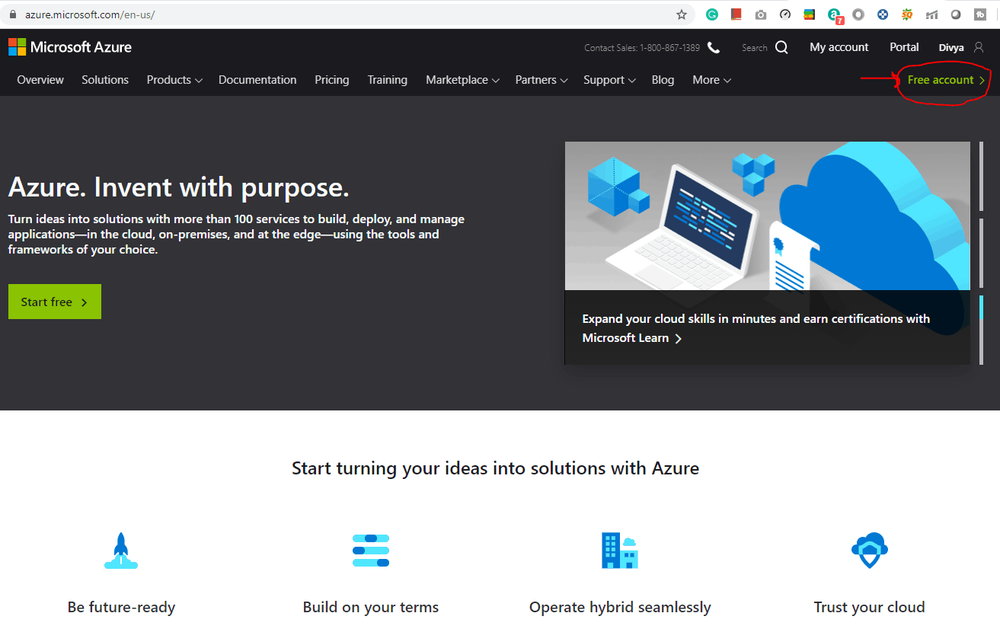
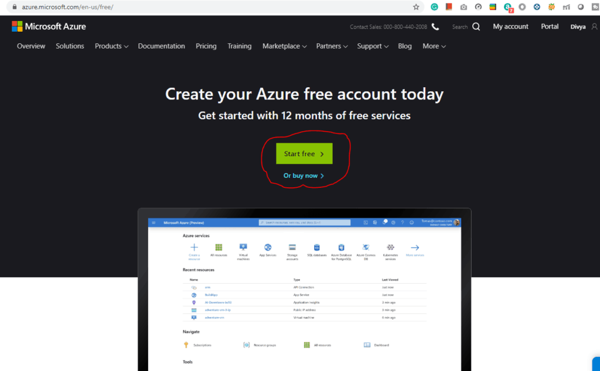
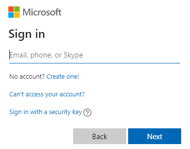
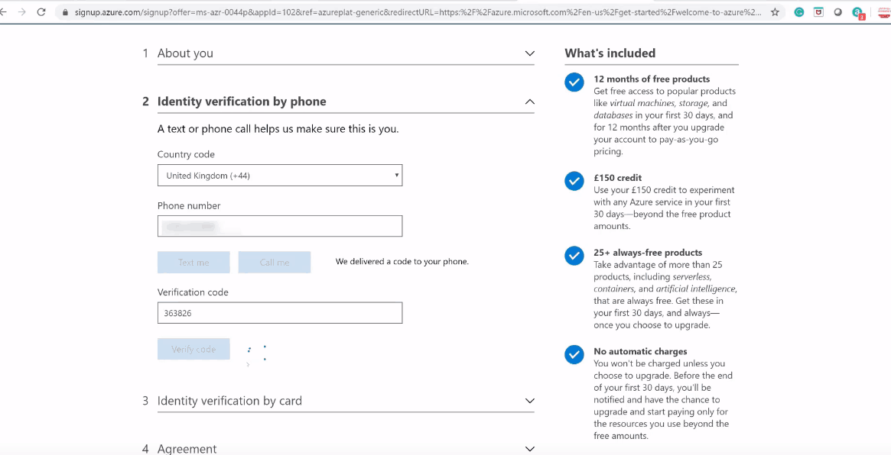
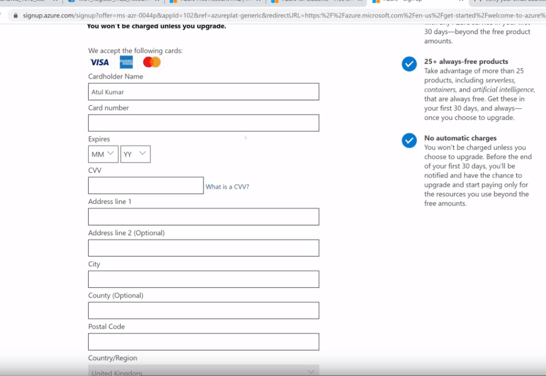
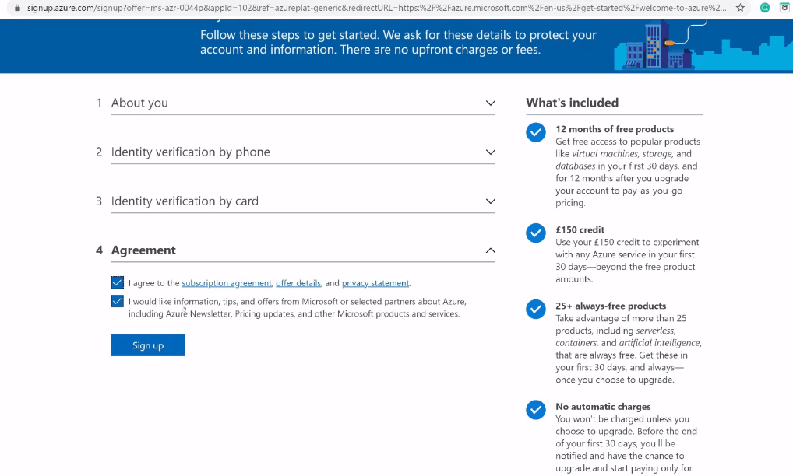
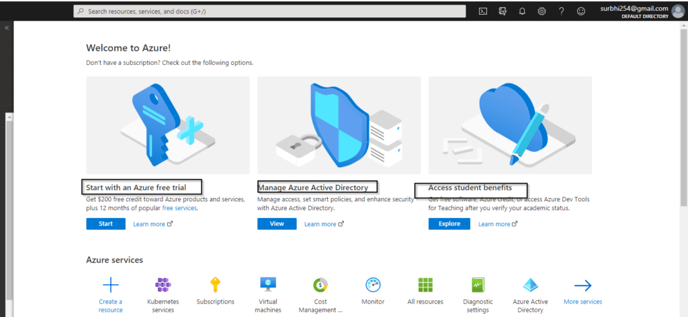
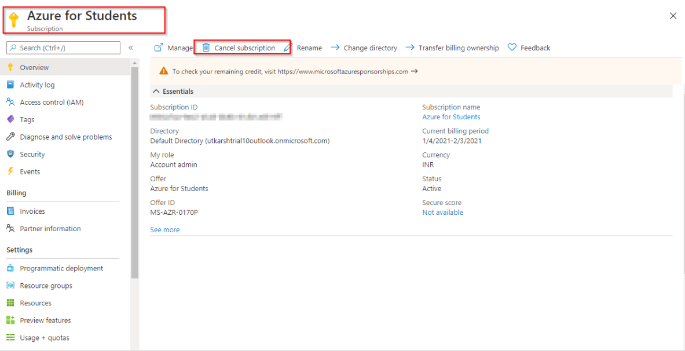

Koraci: Kako dobiti besplatnu pretplatu na Azure?
- Posetite Azure početnu stranicu?
- Kliknite na "Free Azure account" u gornjem desnom uglu. 
- Kliknite na "Start Free". 
- Prijavite se/registrujte za Microsoft nalog koristeći email adresu i lozinku. 
- Unesite svoju državu/region i datum rođenja, zatim kliknite na “Next”.
- Unesite verifikacijski kod primljen na e-mail adresu i kliknite na dalje.
- Upišite captcha kod koji vidite na ekranu i kliknite na dalje.
- Bit ćete preusmjereni na Azure stranicu za prijavu. Unesite svoj region, ime, broj telefona i e-mail
adresu.
Napomena: Trebate koristiti istu e-mail adresu za prijavu na Azure i za Microsoft račun. - Verificirajte svoj broj telefona klikom na “Pošalji mi tekst” ili “Pozovi me” te unesite primljeni verifikacijski kod. 
- Unesite detalje za plaćanje. Obavezno imajte MasterCard/American Express/Visa kreditnu karticu, i međunarodna plaćanja trebaju biti omogućena. 
- Proverite Uslove korišćenja i kliknite na “Sing up”. 
- Uspešno ste kreirali besplatan Microsoft Azure nalog i sada imate početni saldo od 200 dolara.
- Kliknite na “Portal” u gornjem desnom uglu ekrana. Bićete preusmereni na Azure portal.
-
Ako ste iskoristili svoj besplatan kredit na Microsoft Azure, morate preći na plaćanje prema
politici pretplate “Pay
as you go”. Ako ste premašili ograničenje ili vremensko ograničenje, dobićete poruku “Vaša
pretplata je onemogućena i ne možete obavljati operacije dok ponovo ne bude omogućena.”

Nije moguće kreirati više besplatnih Microsoft Azure naloga ili nakon isteka jednog naloga preći na
drugi nalog radi besplatnog kredita od 200$ koristeći istu kreditnu karticu.
Napomena: Ako ste student i nemate kreditnu karticu, možete se registrovati i koristiti svoj studentski ID.
Otkažite svoju pretplatu.
U ovom tekstu ćete naučiti kako otkazati pretplatu ako vam nestane kredita.
- Izaberite svoju pretplatu iz Azure portala naloga.
- Idite na pretplatu i kliknite na opciju “Otkaži pretplatu”. 
- Sada samo potvrdite pretplatu i kliknite na opciju za otkazivanje.

Azure usluge koje su besplatne tokom 12 mjeseci?
Kada isprobate besplatnu verziju Azure-a sa 200 dalara kredita, a zatim pređete na plaćanje prema potrošnji:
- Linux virtualne mašine u okviru Azure-a: Kreirajte i implementirajte softver otvorenog koda visokog kvaliteta i podržanog od strane zajednice u sekundama i smanjite troškove.
- Windows virtualne mašine: Dobijate virtuelnu infrastrukturu sa Windows virtualnim mašinama (VM) koja je dostupna po potrebi, visoko skalabilna i zaštićena u okviru Azure-a.
- Azure Disk Storage: Blok skladište visokih preformansi i visoke izdržljivosti za Azure vitualne mašine.
- VPN Gateway: Povazivanje vaše infrastrukture sa oblakom.
- Container Registry: Registar Docker i Open Container Initiative (OCI) slika, sa podrškom za sve OCI artefakte.